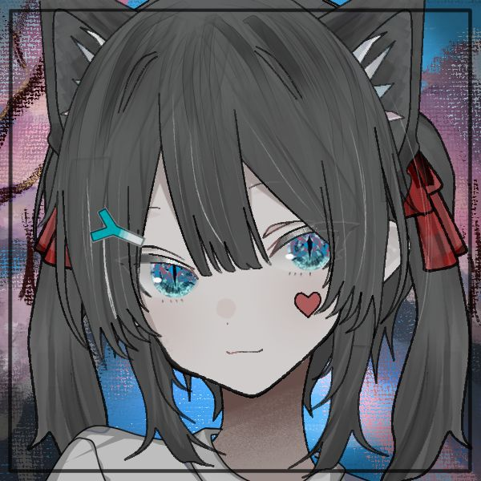

关于窝 / プロフィール
窝系一只敲可爱的CS专业小透明(⁄ ⁄•⁄ω⁄•⁄ ⁄)
东南大学在读~コードもアニメも大好き！(๑•̀ㅂ•́)و✧
本命是V家歌姬们！初音ミク世界一可爱い！♪(^∇^*)
同时还是提督桑~镇守府の日常超治愈的说(´▽`ʃ♡ƪ)
最近在玩鸣潮/OW/CS~一緒にプレイしない？(๑¯◡¯๑)
梦想是成为会写代码的魔法少女！マジカル☆プログラマーになりたい！(ノ◕ヮ◕)ノ*:･ﾟ✧
今日のわくわく：Reactの魔法を勉強中です～✨